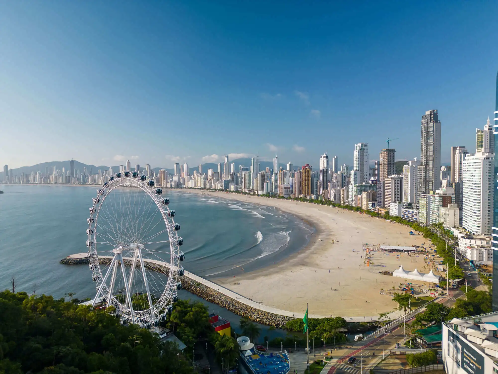

Santa Catarina é um estado da Região Sul do Brasil, conhecido por suas belas praias, cidades organizadas e forte influência da imigração europeia. Sua capital é Florianópolis, famosa pelas paisagens naturais e pelo turismo. O estado possui uma economia diversificada, com destaque para a indústria, agricultura e turismo. Além disso, Santa Catarina é reconhecida pelas festas tradicionais, pela culinária típica e pela qualidade de vida de sua população.
